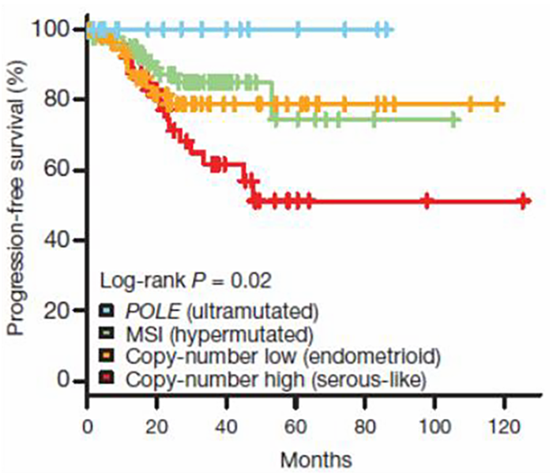

Cáncer de Endometrio

2.7 Factores Pronósticos
Estadio tumoral
El principal factor pronóstico del CE, al igual que ocurre en otros tumores, es el estadio tumoral. Como se ha comentado, la gran mayoría de carcinomas de endometrio se asocian a un pronóstico favorable, al ser diagnosticados con frecuencia en un estadio I, en el la SG a 5 años oscila entre el 85% y 90%. En el estadio II la SG a 5 años se sitúa en torno a un 75-85%, en el III en un 50-65% y en el IV por debajo del 30%.
Afectación ganglionar
La afectación ganglionar ensombrece el pronóstico, más aún si existe infiltración de ganglios paraaórticos. Cuando los ganglios no están afectos la SG a 5 años es del 85%, mientras que disminuye hasta el 35% en caso contrario.
Tipo histológico
También se ha mencionado previamente. Los subtipos histológicos englobados dentro de tipo II patogénico (seroso, células claras y carcinosarcoma) se asocian a un peor pronóstico, y a una mayor incidencia de estadios avanzados al diagnóstico. Entre el 60-70% de los tumores serosos tienen enfermedad extrauterina en el momento del diagnóstico. La SG a 5 años de las pacientes con carcinoma seroso es de sólo un 25% frente al 80% de las que tienen un carcinoma endometrioide.
Ciertos subtipos histológicos, aún menos frecuentes, como el carcinoma indiferenciado o desdiferenciado y el neuroendocrino también tienen mal pronóstico.
Grado histológico
Es un factor pronóstico sólo para el carcinoma endometrioide ya que el resto de tipos histológicos (a excepción del mucinoso) son considerados de alto grado. En un análisis de 600 pacientes con estadios I, la SG a 5 años fue del 94% para pacientes con carcinomas grado 1, 84% para las que tenían tumores grado 2, y el 72% para las de grado 3.
Hay una relación directa entre el grado, la invasión del miometrio y la afectación ganglionar. El 50% de los tumores G3 invaden más de la mitad de la pared miometrial, el 30% tiene afectación ganglionar en pelvis y el 20% en ganglios paraaórticos. La SG a 5 años de pacientes con estadio IB y G3 es de sólo el 58% (mientras que en el resto de estadios I suele estar por encima del 85%).
En pacientes con estadio III existen diferencias importantes en la tasa de SG a 5 años en función del grado histológico, disminuyendo desde el 83% en pacientes con G1, al 68% con G2, y hasta sólo el 48% con G3.
Invasión del miometrio
Es un factor relevante dentro de los estadios I, de manera que la presencia de invasión de más de la mitad del miometrio se tiene en cuenta para establecer las indicaciones de adyuvancia, como luego veremos.
La profundidad de invasión del miometrio está relacionada con una mayor probabilidad de extensión extrauterina y de recaída. Suele correlacionarse con el grado histológico, de tal manera que los tumores con G1 tienen con menos frecuencia invasión de más de la mitad del miometrio que los tumores con G3.
Invasión linfovascular (ILV)
Factor pronóstico que también se tiene en consideración de cara a la indicación de radioterapia en pacientes con riesgo intermedio, como luego veremos. Su presencia se asocia a metástasis en los ganglios linfáticos pélvicos y paraaórticos en un 27% y 19% de los casos, respectivamente.
Otros factores
La edad mayor de 60 años y el tamaño del tumor primario igual o mayor de 2 cm se asocian a un peor pronóstico. La raza negra también influye negativamente en el pronóstico, mientras que la asiática parece asociarse con una evolución más favorable.
Otros factores que clásicamente habían sido asociados al pronóstico, como la afectación del segmento inferior del útero o la citología peritoneal positiva, son actualmente controvertidos. Por este motivo la citología peritoneal ya no se incluye en la última estadificación de la FIGO.
En los últimos años se han investigado diversos biomarcadores que podrían tener una influencia en el pronóstico del cáncer de endometrio, aunque ninguno de ellos ha sido validado ni se utiliza en la práctica clínica.
Los subtipos moleculares explicados previamente, que se describieron en el estudio del TCGA, tienen una clara correlación con el pronóstico, como se observa en la siguiente figura. Concretamente el subtipo asociado a la mutación de POLE presenta un pronóstico excepcionalmente bueno, a pesar de que la mayoría de los casos se trata de tumores de alto grado. Igualmente ocurrió en la validación pronóstica del estudio ProMisE, los tumores con mejor pronóstico fueron aquellos con mutaciones en el dominio exonucleasa de POLE, y los de peor, los que tenían el p53 alterado. No se encontró una clara asociación entre el perfil molecular y los grupos de riesgo de la ESMO (European Socieaty for Medical Oncology), que veremos más adelante (tabla de la siguiente unidad), salvo una coincidencia del 89% de los casos con p53 alterado y el subgrupo de riesgo alto.
Otros estudios han mostrado cómo algunos de estos subtipos moleculares (concretamente POLE y MSI) son más inmunogénicos, y podrían ayudar a seleccionar las pacientes que más se puedan beneficiar de la inmunoterapia en el caso de recaída.
Supervivencia libre de progresión asociada a los subtipos moleculares de cáncer de endometrio (The Cancer Genome Atlas Research Network, Nature 2013).